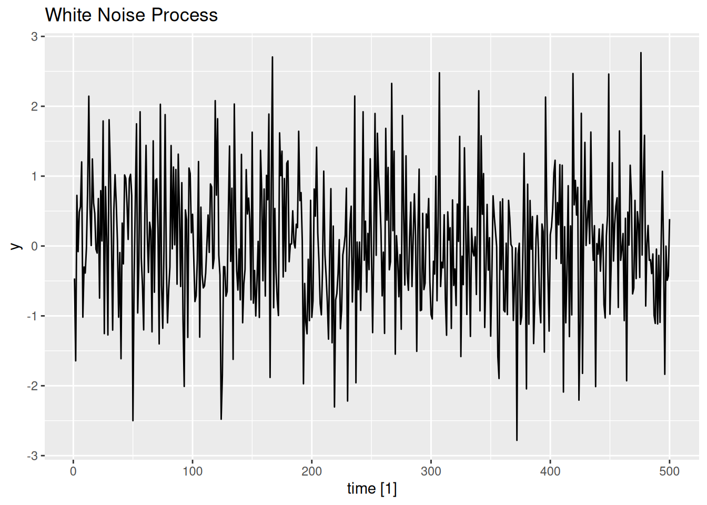
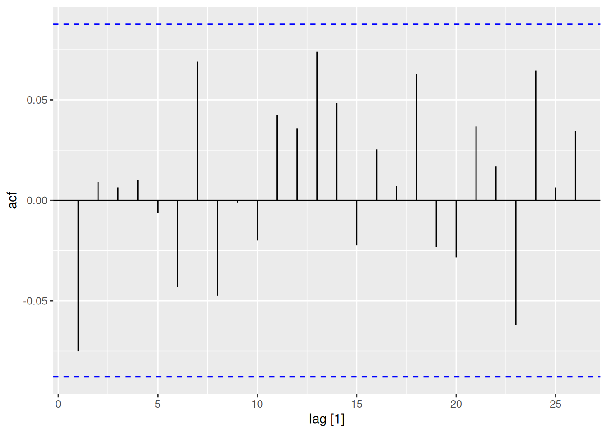

Autocorrelation, also known as serial correlation, measures the correlation of a time series with its own past and future values. Mathematically, the autocorrelation function (ACF) at lag \(k\) for a time series \(\{X_t\}\) is defined as:
where \(\rho_k\) measures the linear relationship between values \(k\) time periods apart.
Positive autocorrelation at lag \(k\): high values tend to follow high values and low values tend to follow low values after \(k\) periods.
Negative autocorrelation at lag \(k\): high values tend to follow low values and vice versa.
No autocorrelation: the series values \(k\) periods apart are uncorrelated, suggesting randomness at that lag.
Partial Autocorrelation in Time Series
Partial autocorrelation measures the correlation between a time series and its lagged values, after removing the influence of intermediate lags. In other words, it quantifies the direct relationship between \(X_t\) and \(X_{t-k}\), controlling for the effects of \(X_{t-1}, X_{t-2}, \dots, X_{t-k+1}\). Mathematically, the partial autocorrelation function (PACF) at lag \(k\) for a time series \(\{X_t\}\) is defined as:
where \(\phi_{kk}\) represents the partial autocorrelation at lag \(k\).
Interpretation of PACF:
A significant partial autocorrelation at lag \(k\) suggests a direct relationship between \(X_t\) and \(X_{t-k}\), independent of the intermediate lags.
A non-significant partial autocorrelation indicates that the relationship between \(X_t\) and \(X_{t-k}\) is fully explained by the intermediate lags.
Comparison with ACF:
While the ACF measures the total correlation between \(X_t\) and \(X_{t-k}\), the PACF isolates the direct correlation, making it a more precise tool for model identification.
Practical Illustration with Real Data
We will use real datasets from the fpp3 package to compute and visualize autocorrelation. The following code snippets demonstrate how to plot the ACF and PACF for a time series, providing insights into its internal structure.
library(fpp3)aus_airpassengers %>%ACF(Passengers) %>%# Calculate autocorrelations for the Passengers seriesautoplot() +# Plot the ACFlabs(title ="ACF of Australian Air Passengers", y ="ACF", x ="Lag")
# Example 2: Partial Autocorrelation of Australian Air Passengersaus_airpassengers %>%PACF(Passengers) %>%# Calculate partial autocorrelations for the Passengers seriesautoplot() +# Plot the PACFlabs(title ="PACF of Australian Air Passengers", y ="PACF", x ="Lag")
White Noise
White Noise
No autocorrelation: \(\mathbb{E}[X_t X_{t-k}] = 0, \quad \forall k \neq 0\)
The white noise process is defined as: \[
X_t = \varepsilon_t, \quad \varepsilon_t \stackrel{iid}{\sim} \mathcal{N}(0, \sigma^2)
\]
# White Noise Simulationwn <-tsibble(time =1:500, y =rnorm(500), index = time)# Visualize and test for autocorrelationwn %>%autoplot(y) +ggtitle("White Noise Process")

wn %>%ACF(y) %>%autoplot()

wn %>%features(y, ljung_box, lag =10) # Should retain H₀ (no autocorrelation)
Lab Activity: White Noise Series, ACF, and Portmanteau Test
Simulate a White Noise Series
Generate a white noise series of length \(n = 500\) using the equation: \[
X_t = \varepsilon_t, \quad \varepsilon_t \stackrel{iid}{\sim} \mathcal{N}(0, 1)
\] Plot the series.
Plot the ACF
Compute and plot the autocorrelation function (ACF) of the white noise series. Interpret the results.
Contaminate the Series
Introduce contamination into the white noise series by adding a lagged component: \[
Y_t = X_t + 0.4 \cdot X_{t-3}
\] Replace missing values with 0. Plot the contaminated series.
Plot the ACF of the Contaminated Series
Compute and plot the ACF of the contaminated series. Compare it with the ACF of the original white noise series.
Perform the Portmanteau (Ljung-Box) Test
Apply the Ljung-Box test to the original white noise series. Interpret the results.
Apply the Ljung-Box test to the contaminated series. Interpret the results.